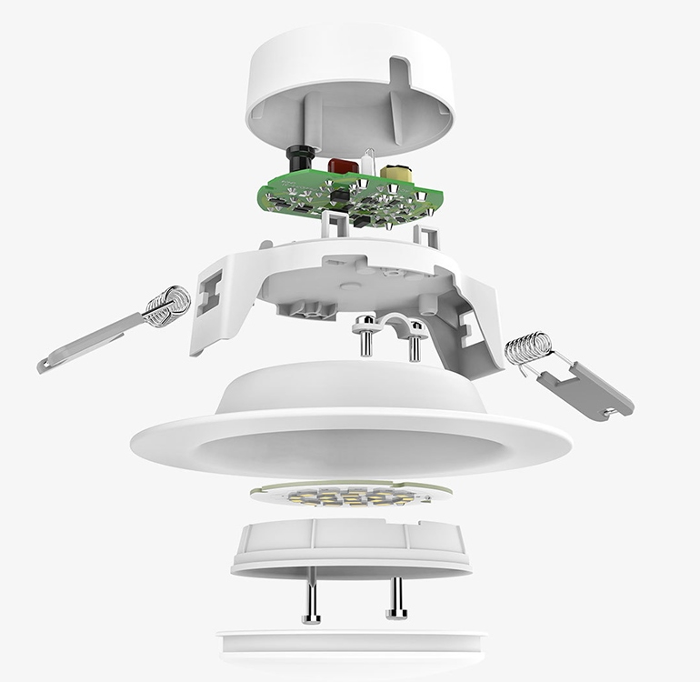
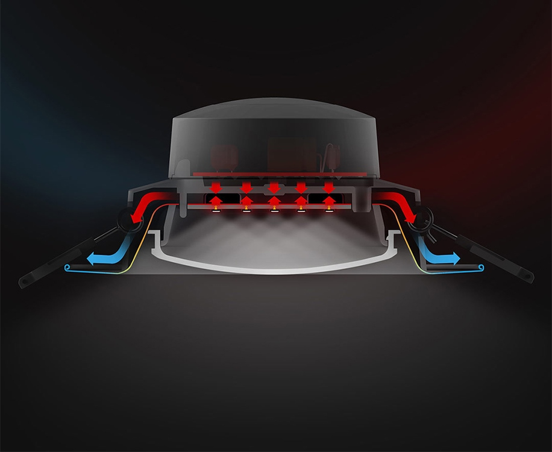
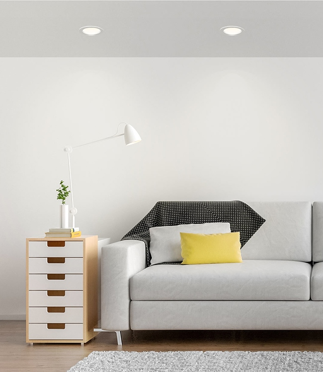
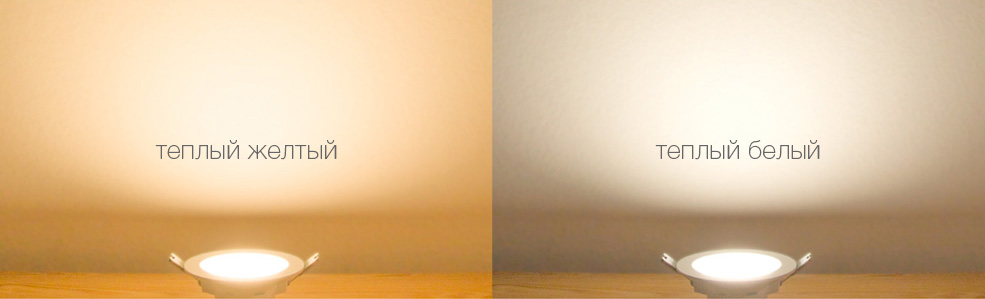
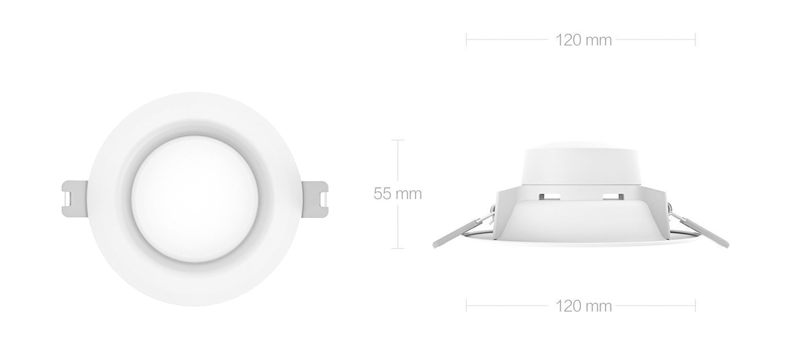

<div class="row downlight">
    <div class="col-xs-12 col-sm-12 col-md-10 col-md-offset-1 col-lg-8 col-lg-offset-2 content">

        <section class="row downlight_content_1">
            <div class="col-xs-12 col-sm-12 col-md-12 col-lg-12">
                <div class="text align-center">
                    <h1>Yeelight Embedded Ceiling Light</h1>
                    <h2>Встраиваемый светодиодный светильник</h2>
                    <p>Компактные рамеры 120×55 mm | Энергоэкономичный | Практичный и&nbsp;износостойкий</p>
                    
                </div>
            </div>
        </section>

        <section class="row downlight_content_2">
            <div class="col-xs-12 col-sm-12 col-md-6 col-lg-6"
                style="padding: 0">
                <div class="text">
                    <h2>Превосходные материалы и отличное качество изготовления</h2>
                    <p>Корус светильника выполнен из тонкого метала с высокими антикорозийными свойствами. За счет этого
                        светильник очень легкий и прочный. В качестве источника света используются качественные
                        светодиоды. Светильник имеет встроенную защиту от перегрузок, короткого замыкания и низкого
                        напряжения, обеспечивая абсолютную надежность и долговечность.</p>
                </div>
            </div>
            <div class="col-xs-12 col-sm-12 col-md-6 col-lg-6"
                style="padding: 0; font-size: 0;"></div>
        </section>

        <section class="row downlight_content_3">
            <div class="col-xs-12 col-sm-12 col-md-6 col-md-push-6 col-lg-6 col-lg-push-6" style="padding: 0">
                <div class="text">
                    <h2>Совершенная система отвода тепла</h2>
                    <p>Тонкий метал и продумманая система оверстий позволяют эффективно отводить и рассеивать тепло,
                        защищая все важные компоненты лампы от перегрева. Это значительно увеличивет срок службы
                        светильника.</p>
                </div>
            </div>
            <div class="col-xs-12 col-sm-12 col-md-6 col-md-pull-6 col-lg-6 col-lg-pull-6" style="padding: 0; font-size: 0;"></div>
        </section>

        <section class="row downlight_content_4">
            <div class="col-xs-12 col-sm-12 col-md-10 col-md-offset-1 col-lg-10 col-lg-offset-1 align-center">
                <div class="text">
                    <h2>Энергоэкономичные светодиоды</h2>
                    <p>При яркости в 400 люмен, светильник потребляет всего 5 Ватт для своей работы. Каждый сведодиод
                        способен эффективно проработать до 25 000 часов.</p>
                </div>
            </div>
        </section>

        <section class="row downlight_content_5">
            <div class="col-xs-12 col-sm-6 col-md-6 col-lg-6"
                style="padding: 0">
                <div class="text">
                    <h2>Смотрите на мир в натуральных цветах</h2>
                    <p>Благодаря уменьшенному индексу искажения цветопередачи, светильник дает натуральное освещение без
                        примесей, показывая настоящие цвета объектов.</p>
                </div>
            </div>
            <div class="col-xs-12 col-sm-6 col-md-6 col-lg-6"
                style="padding: 0; font-size: 0;"></div>
        </section>

        <section class="row downlight_content_6">
            <div class="col-xs-12 col-sm-12 col-md-12 col-lg-12 align-center" style="padding: 0">
                <div class="text">
                    <h2>Два типа цветовой температуры</h2>
                    <p>Тёплый свет 3000K создаёт согревающую атмосферу дома. Белое освещение 4000K создаёт белое яркое
                        освещение.</p>
                </div>
                
            </div>
        </section>

        <section class="row downlight_content_7">
            <div class="col-sm-12 col-md-12 col-lg-12">
                
                <table class="table">
                    <thead>
                        <tr>
                            <th colspan="2">Характеристики</th>
                        </tr>
                    </thead>
                    <tbody>
                        <tr>
                            <td>Модель</td>
                            <td>YLSD03YL / YLSD02YL</td>
                        </tr>
                        <tr>
                            <td>Цвет</td>
                            <td>Белый</td>
                        </tr>
                        <tr>
                            <td>Размеры</td>
                            <td>120x120x55mm</td>
                        </tr>
                        <tr>
                            <td>Световой поток</td>
                            <td>400lm</td>
                        </tr>
                        <tr>
                            <td>Цветовая температура</td>
                            <td>3000K / 4000K</td>
                        </tr>
                        <tr>
                            <td>CRI</td>
                            <td>>83</td>
                        </tr>
                        <tr>
                            <td>Питание</td>
                            <td>200 V</td>
                        </tr>
                        <tr>
                            <td>Мощность</td>
                            <td>5W</td>
                        </tr>
                    </tbody>
                </table>
            </div>
        </section>

    </div>
</div>